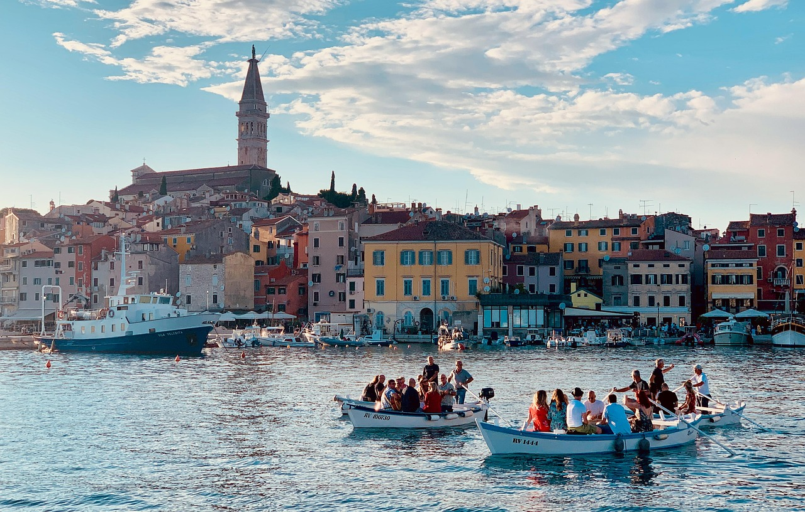

01Première excursion : Rovinj et Vrsar
Rovinj est l’une des villes les plus photographiées de la côte istrienne : des maisons aux couleurs pastel serrées sur une petite presqu’île, des ruelles pavées et, au sommet, le clocher de l’église Sainte-Euphémie. En chemin, nous faisons également escale dans la ville voisine de Vrsar.
- Horaires : 09:00–18:00
- Deux heures à Vrsar et deux heures à Rovinj
- Guide inclus
- Prix : 50 € par personne